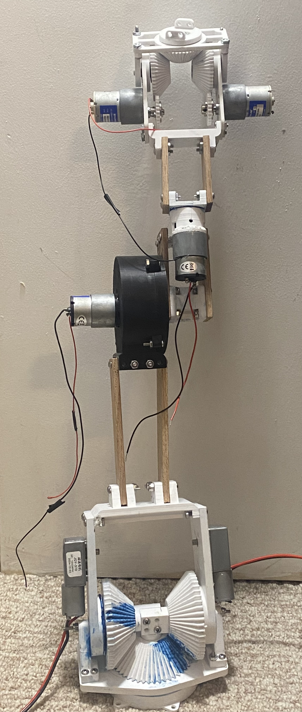
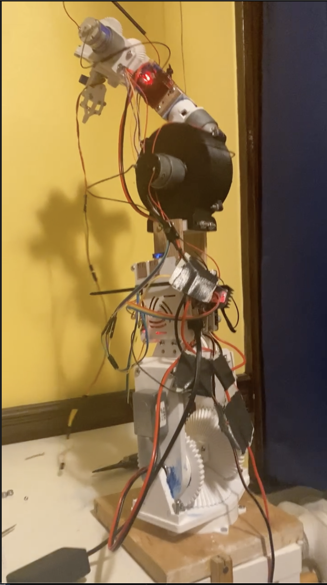
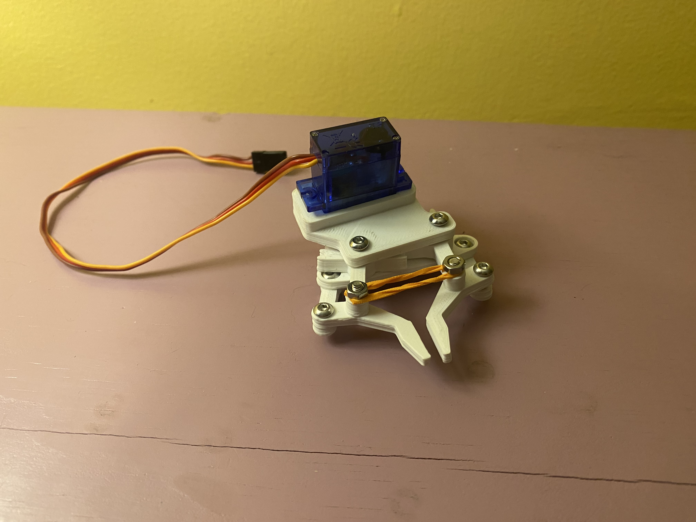

Robotic Arms
Throughout robotics club, I developed a strong interest in robotic arms, which is what led me to start building one. My goal has been to create a cheap, 3D-printable robotic arm using inexpensive motors rather than the stepper motors or servos typically used, which are often significantly more expensive and have worse power ratings. This approach also lets me design a fully custom control system.
V1


This was my first design of a robotic arm. It was experimental and had many flaws, but it allowed me to explore ideas like a custom 3D-printed planetary gearbox and mounting electronics on the arm to reduce wiring and avoid a large external driver board. The arm was driven by a Raspberry Pi 3 with the intention of using the camera module and AprilTags for control rather than external encoders.
Gripper
Gripper
This is the gripper I designed. It is not powerful enough to do much, as it uses a small 9-gram servo.


Mini Arm
Before the second iteration, I built a mini arm using potentiometers to measure joint positions on a roughly 10 cm tall 3D-printed arm. The potentiometers are read by an Arduino Uno which can communicate with a larger arm driver for calibration and potential training of future autonomous control systems.